초보가 첫 주문 전에 알아야 할 7가지 — 맞히기 전에 작게 지는 법
2026-10-23
이 책은 비트코인 선물을 권하는 책이 아닙니다. 선물을 해보려는 초보가 첫 주문을 누르기 전에 알아야 할 최소한을, 크게 벌고 다 잃어 본 직장인 아빠가 정리한 노트입니다.
2020년 4월, 회사 대리님의 비트코인 성공담을 듣고 거래를 시작했습니다. 하락장에서도 벌 수 있다는 말에 선물로 넘어갔고, 100만 원 안에서만 해보자며 바이낸스를 열었습니다. 기억으로는 리플에 400달러를 넣고 30배 레버리지로 약 500%를 벌었습니다. 거래내역으로 다시 확인해야 하는 개인의 회고입니다.
문제는 그다음이었습니다. 원칙 없이 마음 가는 대로 매매하다 번 돈을 잃었고, 다시 넣은 돈도 잃었습니다. 게임으로 치면 우연히 보스를 한 번 잡고 제 실력이 그 정도라고 착각한 셈입니다. 왜 이겼는지 몰랐으니 지는 것도 설명할 수 없었습니다.
지금 제 매매 기록을 펼쳐 보면 실수는 늘 셋 중 하나였습니다. 손절 숫자 없이 들어갔거나, 틀린 뒤에도 ‘조금만 더’ 하며 버텼거나, 화면을 하루 종일 봐야 하는 매매를 회사 다니는 아빠가 골랐습니다. 부끄럽지만 이 노트의 첫 초안을 쓴 뒤에도 같은 실수를 또 했습니다. 그 기록을 「그날의 로그」라는 이름으로 중간중간 넣었습니다. 금액은 빼고 비율과 행동만 남겼습니다.
그때부터 발상을 뒤집었습니다. 맞히는 법을 더 찾는 대신, 지는 법을 공부하기로 했습니다. 이 책은 그 순서대로 갑니다. 무엇이 문제였는지, 무엇을 공부했는지, 그것만 지켰더니 무엇이 달라졌는지.
그래서 이 책의 메시지는 하나입니다. 선물에서 살아남는 사람은 잘 맞히는 사람이 아니라, 틀렸을 때 작게 지는 사람입니다. 첫 주문 전에 알아야 할 최소한을 일곱 가지로 묶었습니다.
이 책을 다 읽으면 할 수 있는 것
① 주문 전에 ‘틀리면 얼마 → 그래서 수량은 이만큼’을 계산한다.
② 계획보다 더 잃게 만드는 구멍 다섯 개를 알아본다.
③ 포지션마다 TP·SL로 끝난 원인을 적고, 쌓인 기록에서 내 스타일을
찾는다.
끝까지 읽고 거래하지 않기로 결정해도 괜찮습니다. 그것도 작게 지는 법의 하나입니다.
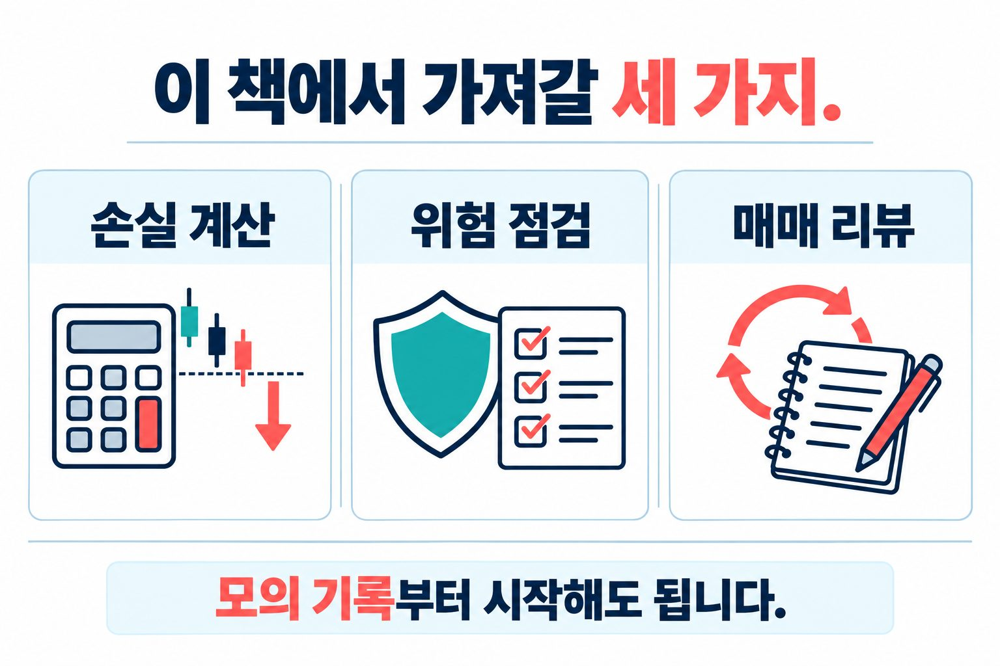
그림 1. 이 책에서 가져갈 세 가지 — 개념도
RPG 조작법을 모르면 엉뚱한 버튼을 누르듯, 거래 구조를 모르면 의도와 다른 주문을 냅니다. 저도 다 알고 시작하지 않았습니다. 그래서 제가 헷갈렸던 것부터 정리합니다.
현물 거래는 코인을 직접 사고파는 거래입니다. 빌리지 않고 산 현물에는 강제 청산이 없지만, 가격이 크게 떨어지거나 상장폐지·보관 문제로 손실이 날 수 있습니다. 오래 들고 있다고 회복이 보장되지도 않습니다.
선물은 코인을 사는 게 아니라 가격 변동의 손익을 주고받는 계약입니다. 이 책은 만기가 없는 무기한 계약을 기준으로 설명합니다. 무기한 계약에서는 오르는 쪽(롱)과 내리는 쪽(숏) 모두에 걸 수 있고, 맡긴 돈보다 큰 포지션을 잡을 수 있습니다. 그만큼 이익과 손실이 같이 커지고, 담보가 부족해지면 거래소가 포지션을 강제로 닫습니다.
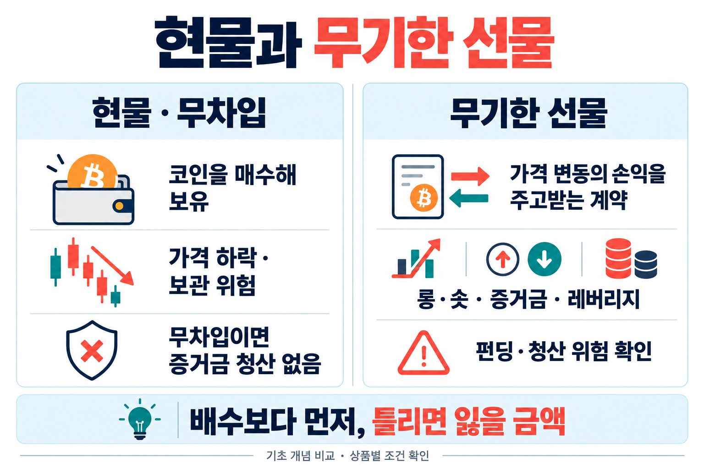
그림 2. 현물과 무기한 선물의 차이
롱은 가격이 오르면 이익, 내리면 손실입니다. 숏은 그 반대입니다. 숏을 ‘하락에 산다’고 외우기보다, 가격이 내리면 이익이 나는 계약 포지션으로 이해하는 편이 정확합니다. 실제 손익에는 수량과 수수료·펀딩비가 반영됩니다.
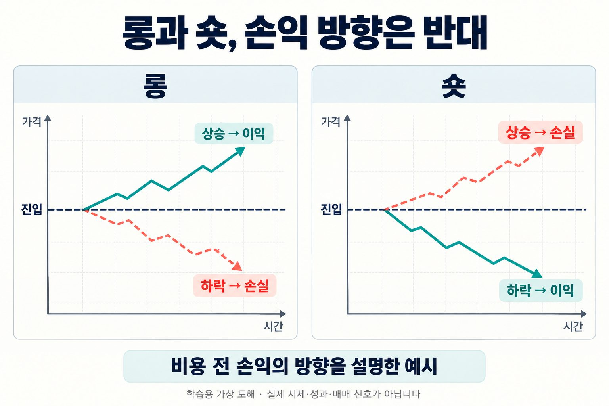
그림 3. 롱과 숏 — 같은 진입가에서 방향에 따른 비용 전 손익(가상 예시)
선물에서는 두 금액을 꼭 구분합니다. 증거금은 포지션을 열려고 맡기는 담보이고, 명목금액은 실제로 가격 변동을 받는 포지션의 크기입니다. 증거금 100 USDT로 명목 1,000 USDT 포지션을 열었다면, 가격이 1% 움직일 때 손익은 약 10 USDT입니다. 손익도 수수료도 명목금액을 따라갑니다.
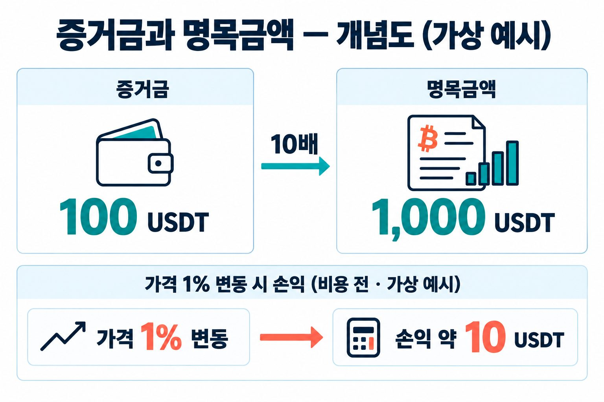
그림 4. 증거금과 명목금액 — 개념도 (가상 예시)
포지션을 여는 진입(Open)과 닫는 종료(Close)는 다른 주문입니다. 종료하려고 반대 방향 신규 주문을 내면, 포지션이 닫히는 대신 반대 포지션이 하나 더 생길 수 있습니다. 지정가는 체결을 보장하지 않고, 시장가는 예상과 다른 가격에 체결될 수 있습니다. 종료 뒤에는 남은 포지션과 아직 살아 있는 주문을 확인합니다. 실제 화면은 부록 A에 있습니다.
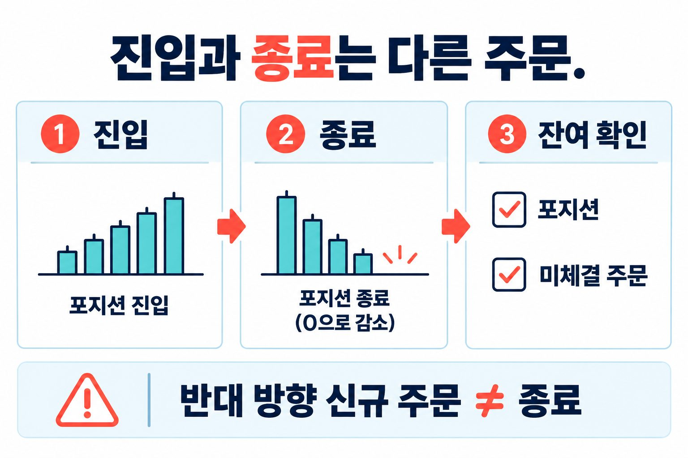
그림 5. 진입과 종료는 다른 주문 — 개념도
여기까지 알게 된 것: 선물은 맞히는 게임이기 전에 규칙을 아는 게임이었습니다. 규칙을 모르고 맞힌 500%는 실력이 아니라 운이었습니다.
‘워뇨띠’라는 이름으로 알려진 국내 비트코인 트레이더가 2026년 9월 22일, 2018년부터 2021년까지의 비트멕스 거래 원장을 공개했습니다. 비트코인 무기한 계약(XBTUSD)에서 진입부터 종료까지 끝난 포지션을 묶으면 2,589판입니다. 저는 AI 도구의 도움을 받아 이 원장을 다시 계산해 봤습니다. 궁금한 건 하나였습니다. 전설은 얼마나 자주 이겼을까?
원장에서 다시 센 숫자 넷
① 완결 포지션 2,589판, 승률 75.7%, 순손익 +1,985.62 BTC
② 순손익 상위 1%인 26판의 합 +2,000.62 BTC — 전체 순이익의 101%
③ 나머지 2,563판의 합 −15.00 BTC — 다 합쳐도 거의 0
④ 진 판의 손절은 가격 기준 중앙값 −0.2%, 진 판의 절반은 1시간 안에
정리
상위 26판의 순손익 합계가 전체 순이익보다 컸습니다. 나머지 2,563판은 이긴 판과 진 판을 합쳐 −15.00 BTC였습니다. 이는 그 2,563판을 모두 졌다는 뜻도, 각각의 손실이 작았다는 뜻도 아닙니다. 승률 75.7%와 별개로 순이익이 소수의 큰 수익 거래에 몰렸다는 이야기입니다. 하이라이트 몇 장면과 전체 기록은 다르게 읽어야 합니다.
패배 거래의 가격 기준 손실 중앙값은 약 0.2%였습니다. 모든 패배를 그 폭으로 잘랐다는 뜻은 아니며, 계좌 수익률이나 증거금 수익률과도 다릅니다. 반대로 순손익 상위 31판은 보유 중 가격 고점에서 중앙값 7.7%를 내준 뒤 나왔다는 분석이 있습니다. 손실 거래의 크기와 큰 수익 거래의 분포를 따로 보는 것이 이 기록에서 가져갈 질문입니다.
저는 2020년을 크게 벌고도 결국 잃었던 시기로 기억합니다. 앞에서 밝힌 회고 수치는 아직 거래내역으로 재확인하지 못했습니다. 이 원장은 승률과 순이익의 집중도를 따로 보게 합니다. 원장의 결과만으로 그가 어떤 의도로 거래했는지, 같은 방법이 앞으로도 통할지는 알 수 없습니다.
이 숫자를 읽는 법
공개된 과거 원장을 사후에 다시 계산한 결과입니다. 그가 ‘0.2%에서
자른다’는 규칙을 썼다는 증거가 아니라, 결과가 그런 모양이었다는
뜻입니다.
그는 살아남은 한 사람입니다. 같은 방식으로 사라진 사람의 원장은 공개되지
않습니다. 이 책은 원장의 진위를 보증하지 않습니다.
그럼 나도 0.2%에서 자르면 될까요? 6장에서 답하겠지만, 회의가 있는 직장인에게는 거의 불가능합니다. 대신 누구나 따라 할 수 있는 것이 있습니다. ‘틀리면 얼마’를 먼저 정하는 일입니다.
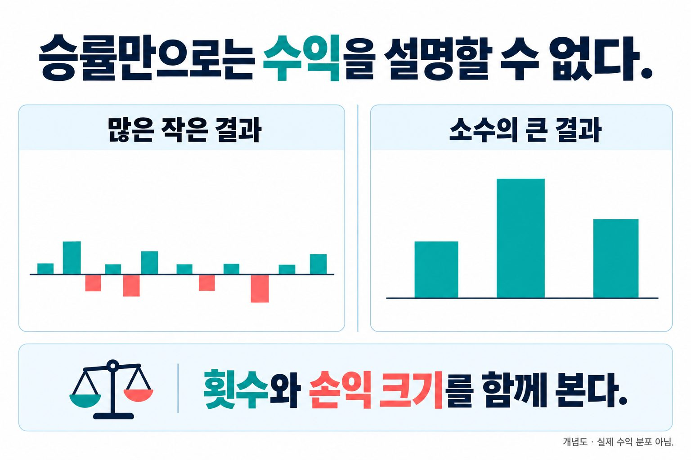
그림 6. 승률만으로는 수익을 설명할 수 없다 — 개념도
그래서 바꾼 생각: 맞히는 법은 그만 찾기로 했습니다. 이제부터는 지는 법을 공부합니다. 2부는 그 공부 노트입니다.
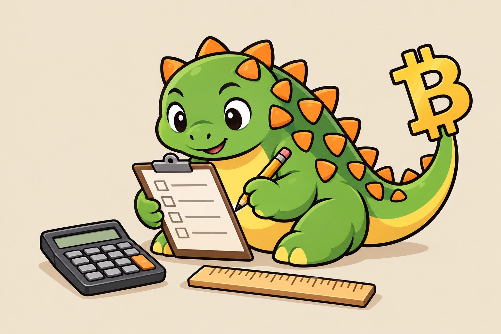
30배를 누르던 시절, 저는 배율만 봤습니다. 이번 거래가 틀리면 얼마가 날아가는지는 적어 두지 않았습니다.
레버리지 버튼은 크게 보입니다. 하지만 주문 전에 먼저 적을 숫자는 따로 있습니다. 이번 거래가 틀렸을 때 얼마를 잃을 것인가.
가상의 계좌에 1,000 USDT가 있고, 한 거래에서 잃어도 되는 금액(손실 예산)을 5 USDT로 정했다고 해 보겠습니다. 이 0.5%는 계산을 보여주기 위한 가정입니다.
진입가 50,000, 손절가 49,500이면 1 BTC당 손절 거리는 500 USDT입니다. 수량은 5 ÷ 500 = 0.01 BTC, 명목금액은 500 USDT입니다. 순서는 늘 같습니다. 손실 예산 → 손절 거리 → 수량.
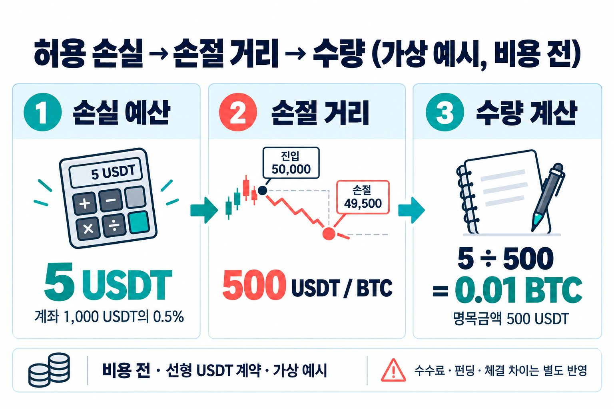
그림 7. 허용 손실 → 손절 거리 → 수량 (가상 예시, 비용 전)
같은 0.01 BTC를 들고 있으면 10배든 20배든 같은 가격 변동에 같은 손익이 납니다. 배율이 바꾸는 건 필요한 증거금과 청산까지의 여유입니다. ‘10배니까 계좌가 10배로 움직인다’고 생각하면 위험을 잘못 읽게 됩니다. 낮은 배율이라고 안전한 것도 아닙니다. 수량이 크면 똑같이 크게 잃습니다. 게임으로 치면 배율은 공격력이 아니라 HP바 길이에 가깝습니다. 버틸 여유가 짧아질 뿐, 맞는 데미지는 수량이 정합니다.
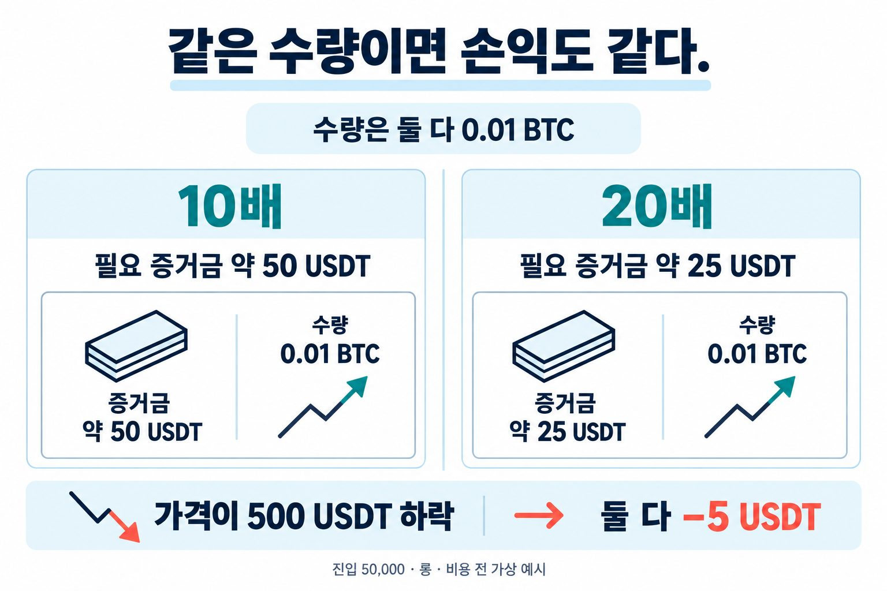
그림 8. 같은 수량이면 손익도 같다 — 개념도 (가상 예시)
위 계산은 손절가에서 정확히, 비용 없이 체결된다는 가정입니다. 테이커 수수료를 0.05%로 가정하면 명목 500 USDT 포지션은 들어갈 때 0.25 USDT, 손절가에서 나올 때 약 0.2475 USDT로 왕복 약 0.5 USDT를 냅니다. 예상 왕복 수수료만으로 손실 예산 5 USDT의 약 10%를 씁니다. 비용을 포함하려면 수량을 더 줄여야 하고, 급변할 때는 손절가보다 더 불리하게 체결될 수도 있습니다. 실제 요율은 거래소와 등급마다 다릅니다.
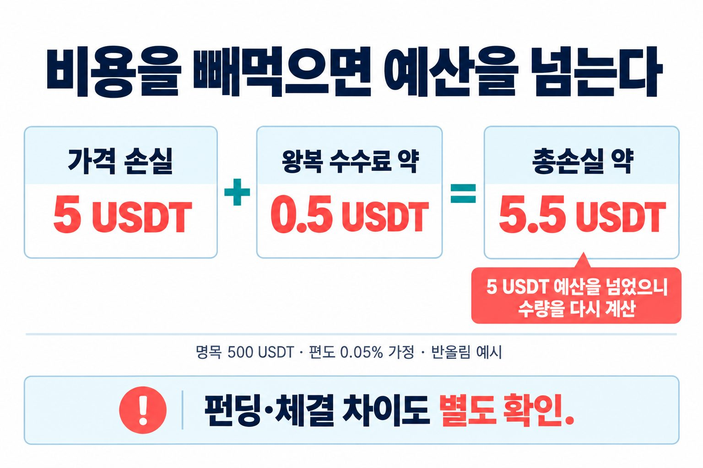
그림 9. 비용을 빼먹으면 예산을 넘는다 — 개념도 (가상 예시)
진입 50,000, 손절 49,500, 목표 52,000이면 손절 거리 500, 목표 거리 2,000으로 손익비는 4:1입니다. 그렇다고 이길 확률이 높다는 뜻은 아닙니다. 목표에 닿는다는 보장도 없습니다. 손익비는 들어갈 가치가 있는지 보는 기준이고, 수량은 늘 손실 예산에서 정합니다.
한 장 카드 — 주문 버튼 옆에 붙여 둘 세 줄
① 이번 거래가 틀리면 잃을 금액(손실 예산)
② 진입가와 손절가의 거리
③ 비용 전 수량(BTC) = ①(USDT) ÷ ②(USDT/BTC) = ___
셋 중 하나라도 비어 있으면 주문하지 않습니다. 비용 포함 수량은 부록 C의
가상 예시처럼 다시 계산합니다.
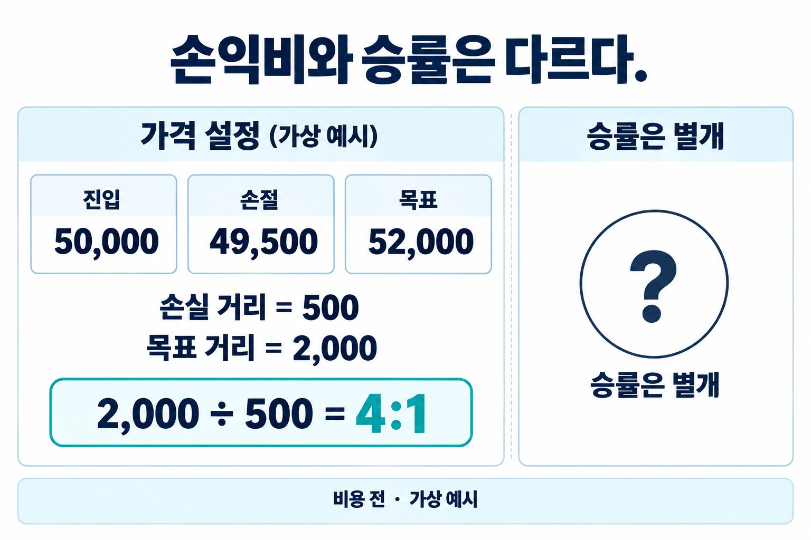
그림 10. 손익비와 승률은 다르다 — 개념도 (가상 예시)
공부해서 지킨 규칙 하나: 손실 예산과 손절 거리를 모르면 수량을 정하지 않습니다.
차트를 그리면 늘 들어갈 자리부터 찾았습니다. 손절 자리는 ‘나중에’였습니다. 2026년 2월의 숏도 그랬습니다(5장 「그날의 로그」).
이 장의 질문은 ‘어디서 들어갈까’가 아니라 ‘어디서 틀렸다고 인정할까’입니다. 실린 차트는 대부분 제가 2022년에 트레이딩뷰에 직접 그린 것입니다. 당시의 판단 과정을 보여주려고 실었고, 지금의 매매 신호가 아닙니다. 뉴스·유동성·경제 일정도 가격을 움직이므로 차트만으로 모든 걸 설명할 수는 없습니다.
저는 매일 새벽 6시에서 7시 사이, 출근 준비를 하기 전에 트레이딩뷰를 엽니다. 한 번에 10분 안팎입니다. 2022년에 이 원고를 처음 쓸 때도 그랬고, 지금도 그렇습니다.
순서는 늘 같습니다. 주봉에서 큰 추세선과 지지·저항 구간을 확인하고, 일봉, 4시간봉, 1시간봉으로 내려오며 선을 고칩니다. 월요일 아침 9시 전에는 주봉 마감을, 매월 1일 아침 9시 전에는 월봉 마감을 따로 봅니다(제가 보는 바이낸스 차트는 한국 시각 오전 9시에 일봉이 바뀝니다).
선만 긋고 끝내지 않습니다. 오늘 들어간다면 어디서 틀렸다고 인정할지(SL), 어디서 나올지(TP)를 차트 위에 같이 그립니다. 주문하지 않는 날이 더 많습니다. 그래도 매일 SL과 TP를 그려 보니, 제게 맞는 선 긋는 법과 손절 자리를 잡는 감각이 조금씩 생겼습니다. 차트는 내 마음대로 그려도 됩니다. 정답 선은 없습니다. 중요한 건 같은 순서로 매일 그리고, 다음 날 그 선이 어떻게 됐는지 확인하는 것입니다.
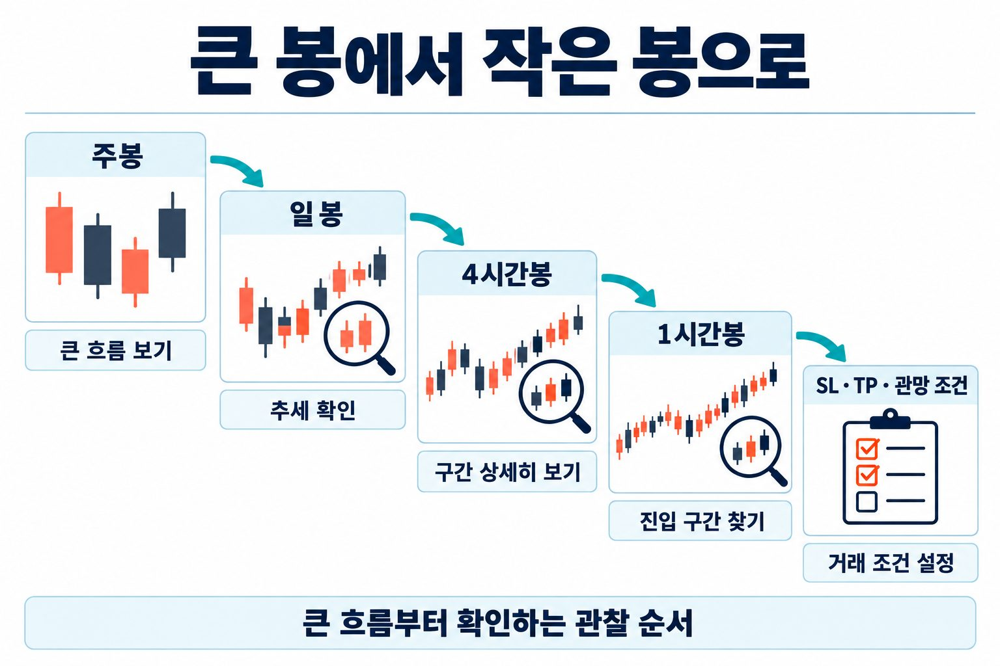
그림 11. 큰 봉에서 작은 봉으로 — 개념도
지지는 하락이 멈추거나 반등했던 영역, 저항은 상승이 막혔던 영역입니다. 한 가격에서 정확히 반응한다고 보기보다 폭이 있는 구간으로 봅니다.
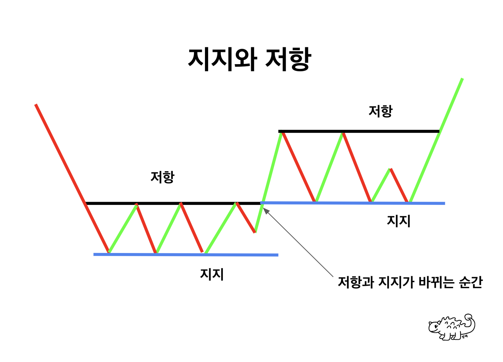
그림 12. 지지와 저항
그래서 손절은 어디: 지지에 기대 롱을 잡는다면, 손절은 지지 구간의 아래쪽 끝 너머에 둡니다. 구간 안쪽에 두면 정상적인 흔들림에도 털립니다.
횡보할 때는 위쪽 저항과 아래쪽 지지 사이의 범위를 봅니다. 지지 근처라는 이유만으로 사거나 저항 근처라는 이유만으로 팔지 않습니다. 반응을 확인하고, 틀리는 조건과 남은 거리를 함께 적습니다.
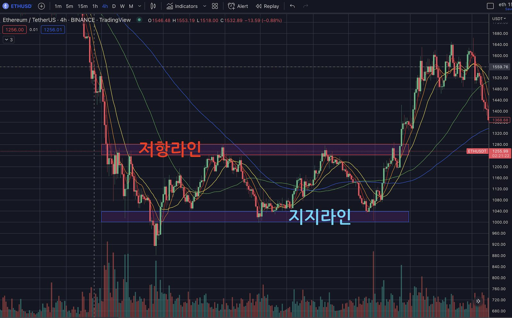
그림 13. 저항라인과 지지라인 — 범위 매매 예시
그래서 손절은 어디: 박스 하단 롱이면 하단 바깥, 상단 숏이면 상단 바깥. 박스 중간은 손절 자리가 애매하니 들어가지 않는 쪽을 먼저 생각합니다.
저항을 뚫고 올라간 가격이 그 선을 다시 확인하러 내려오는 움직임을 리테스트라고 합니다. 저항이 지지로 바뀌는지 보는 자리입니다. 반대로 지지가 깨지면 그 선이 저항으로 바뀌는지 봅니다. 다만 재확인이 오지 않거나, 반응한 뒤 다시 이탈할 수도 있습니다.
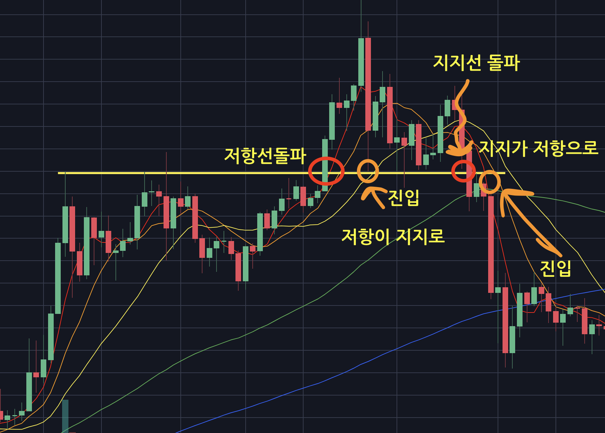
그림 14. 돌파 후 리테스트
종가 판단과 손절 주문: 돌파한 선 아래로 다시 마감하면 시나리오를 재검토합니다. 이것과 실제 손절 주문은 별개입니다. 진입 전에 손실 예산에 맞는 종료 주문 가격과 수량을 정하며, 그 가격이 먼저 트리거되면 종가를 기다리려고 손절을 미루지 않습니다.
아래는 2022년 11월 무렵 제가 그린 이더리움 주봉입니다. 2021년 11월 고점부터 이어진 하락 추세선을 1년 가까이 넘지 못하고 있었습니다.
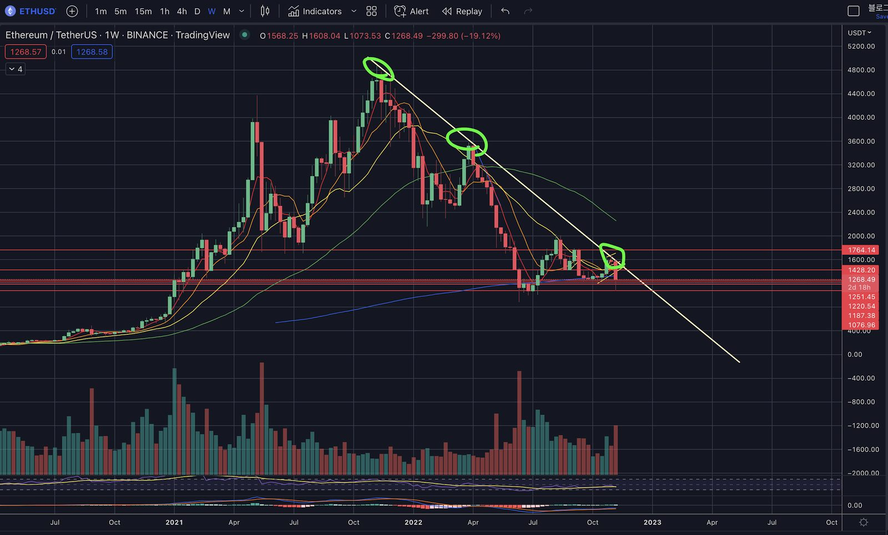
그림 15. 이더리움 주봉
당시 해석은 이랬습니다. 큰 흐름은 아직 하락이다. 주봉 마감에서 20주 이동평균선과 추세선을 거래량과 함께 강하게 넘으면 그때 롱을 검토한다. 20주선을 회복하지 못하면 당분간 하락으로 본다.
종가 판단과 손절 주문: 주봉이 다시 추세선 아래로 마감하면 분석 시나리오를 재검토합니다. 주봉 마감까지 손실을 그대로 버틴다는 뜻은 아닙니다. 실제 포지션은 진입 전에 정한 종료 주문 가격과 수량으로 관리하며, 가격 트리거가 먼저 실행되면 그 주문을 따릅니다. 허용할 손절 거리로는 손실 예산을 맞출 수 없다면 진입하지 않는 선택도 있습니다.
단기로 볼 때도 큰 봉부터 내려옵니다. 폴리곤(MATIC) 4시간봉은 비트코인이 크게 빠지는 동안에도 상승 채널을 지켰고, 1.02 부근은 여러 번 지지와 저항을 받은 수평선이었습니다.
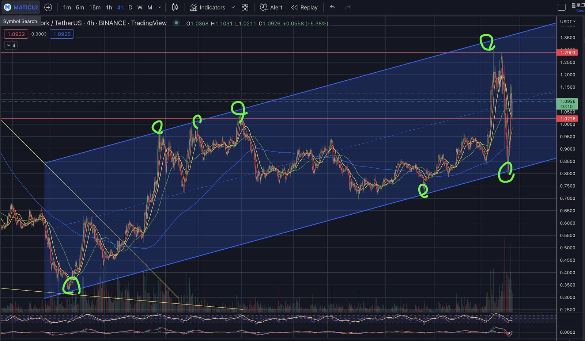
그림 16. 폴리곤 4시간봉
15분봉으로 내려오면 채널 하단과 1.02 수평선이 겹치는 자리가 보입니다. 당시에는 15분봉 마감을 보며 그 자리에서 짧은 반등을 노리고, 채널 하단이 거래량과 함께 깨지면 짧은 숏을 검토했습니다.
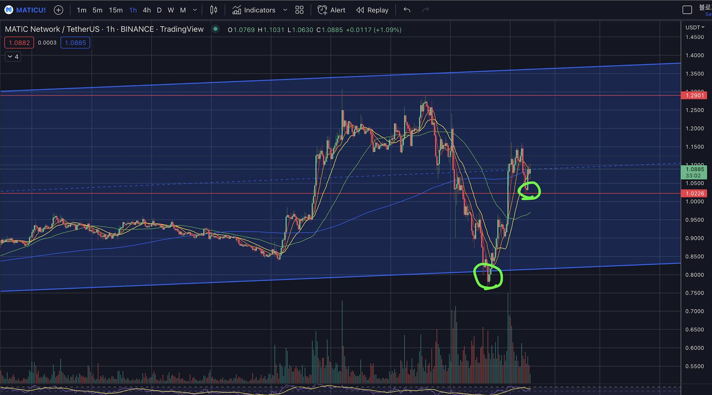
그림 17. 폴리곤 15분봉
종가 판단과 손절 주문: 1.02 지지 롱은 그 아래 마감, 채널 이탈 숏은 다시 채널 안으로 돌아오는 마감을 분석 재검토 기준으로 봅니다. 실제 주문의 종료 가격은 종가 조건과 구분해 미리 정합니다. 손실 제한 주문이 먼저 실행됐다면 봉 마감을 기다리기 위해 다시 위험을 늘리지 않습니다.
매매할 영역과 하지 않을 영역을 먼저 나눕니다. 초록 동그라미는 18.6k 부근에서 여러 번 지지를 받은 자리입니다.
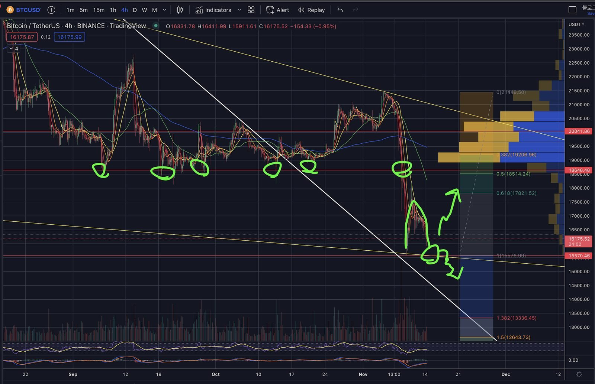
그림 18. 비트코인 4시간봉, 2022년 11월 14일
당시 메모입니다. 18.6k는 지지였지만 큰 음봉으로 뚫렸으니 이제 저항이다. 15.5k는 전저점이라 쌍바닥을 만들 수도, 깨고 12k 부근까지 갈 수도 있다. 그래서 18.6k를 몸통으로 회복하면 롱, 15.5k 아래로 4시간봉이 음봉 마감하면 숏을 검토하고, 그 사이 애매한 구간에서는 매매하지 않기로 했습니다.
지금 다시 보면 아쉬운 점도 있습니다. 2022년 원고에는 ‘SL은 유동적이라 걸지 않기도 한다’는 문장이 있었습니다. 지금의 저라면 지웁니다. 손절 자리를 정하지 못한 영역은 매매 영역이 아닙니다.
영역을 정했으면 언제 들어갈지가 남습니다. 저는 주로 봉이 마감할 때를 봅니다. 아래 비트코인 4시간봉은 저점과 고점이 함께 높아지는 상승 쐐기 모양이었고, 하단 추세선을 이탈하면 크게 밀릴 수 있는 자리였습니다.
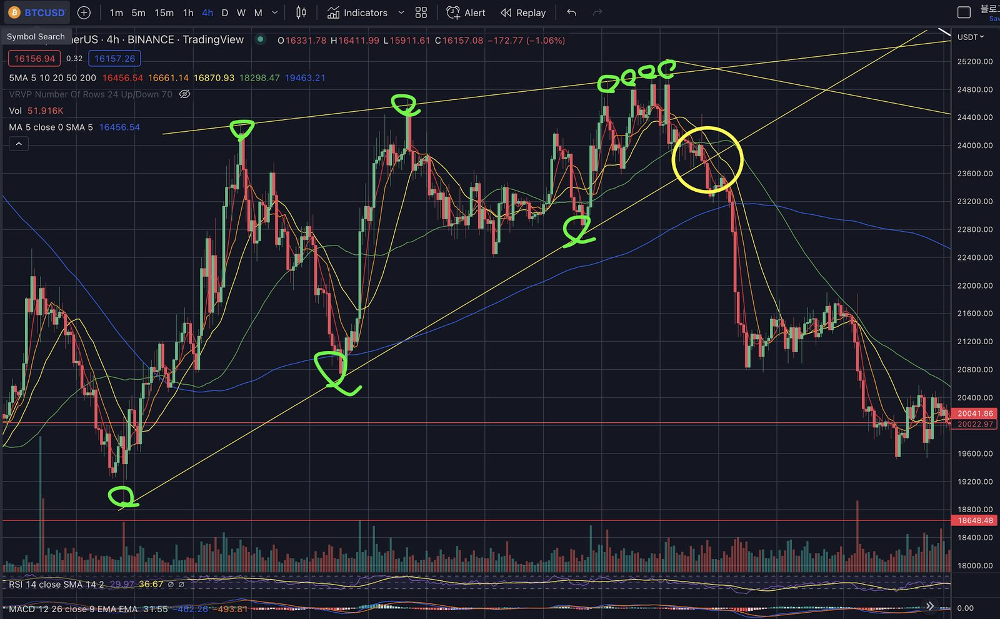
그림 19. 비트코인 4시간봉, 2022년 8월 11일 17시 무렵부터
노란 동그라미 구간에서 4시간봉이 거래량과 함께 선 아래 음봉으로 마감하면 숏, 리테스트에서 들어가고 SL을 걸고, TP는 아래 지지선인 20.8k 부근에 둔다는 계획이었습니다. 봉이 진행 중일 때의 모양과 마감 뒤 모양은 다릅니다. 잠깐 뚫은 꼬리와 마감한 몸통을 구분해서 봅니다.
맞을 때도 있고 틀릴 때도 있습니다. 그리고 가끔은 차트 자체가 무너지는 날이 옵니다. 2022년 2월 러시아가 우크라이나를 침공했을 때처럼, 뉴스 하나에 새벽에 그어 둔 지지선이 아무 의미 없이 뚫립니다. 그런 날 포지션이 반대 방향이라면 할 수 있는 일은 미리 걸어 둔 SL에서 나오는 것뿐입니다.
틀리는 건 막을 수 없습니다. 하지만 틀렸을 때 종료할 기준은 SL로 미리 정할 수 있습니다. 급변 구간에서는 실제 체결가가 그 기준보다 불리해질 수 있습니다. 그래서 저는 차트를 그릴 때 TP보다 SL을 먼저 긋습니다.
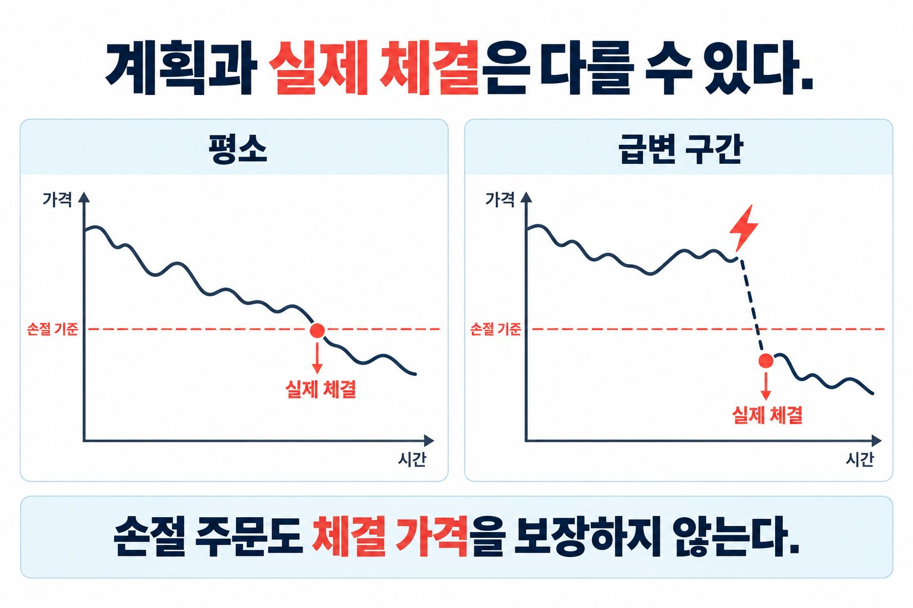
그림 20. 계획과 실제 체결은 다를 수 있다 — 개념도
공부해서 지킨 규칙 둘: 차트에는 TP보다 SL을 먼저 긋고, SL을 못 그은 날은 들어가지 않습니다.
손절 숫자를 정해 놓고도 더 잃은 날이 있었습니다. 가격이 다가오자 그 숫자를 슬그머니 옮긴 날입니다(이 장의 「그날의 로그」).
3장의 계산은 ‘손절가에서 정확히, 비용 없이 체결된다’는 가정 위에 있습니다. 실제로는 그 가정을 깨는 구멍이 있습니다. 손실 예산은 최대 손실이 아닙니다. 구멍을 막아야 비로소 예산이 됩니다.
청산은 담보(유지증거금)가 부족해졌을 때 거래소가 포지션을 강제로 닫는 절차입니다. 증거금이 0이 될 때까지 기다려 주지 않습니다. 바이낸스는 청산 판단에 마크가격을 쓰고, 증거금 모드·수량·추가 담보에 따라 청산 지점이 달라집니다.
손절은 내가 정한 종료 계획이고, 청산은 거래소의 강제 종료입니다. 청산가를 손절가처럼 쓰지 않습니다. 손절은 반드시 청산가보다 훨씬 앞에 둡니다.
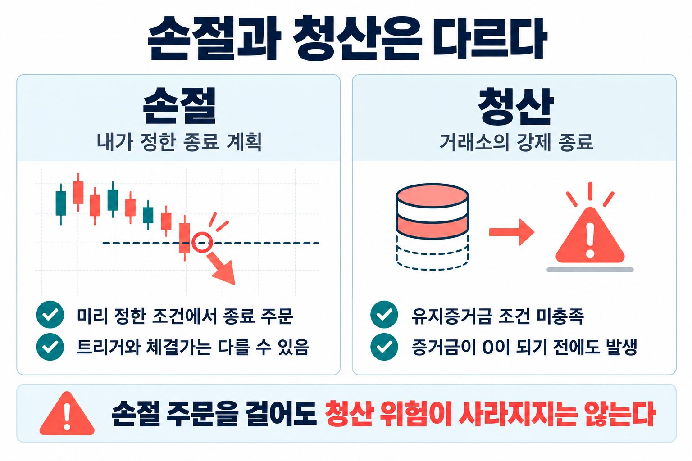
그림 21. 손절과 청산 — 종료 계획과 강제 종료
수수료는 진입·종료 체결에 붙는 비용이고, 슬리피지는 예상 가격과 실제 체결 가격의 차이입니다. 실제 체결가로 손익을 계산했다면 그 안에 반영된 슬리피지를 다시 빼지 않습니다.
무기한 계약에는 수수료 말고 펀딩이 붙습니다. 계약 가격이 현물 가격에서 멀어지지 않게 롱과 숏이 서로 주고받는 돈입니다. 펀딩비율이 양수면 보통 롱이 숏에게, 음수면 숏이 롱에게 냅니다. 금액은 ‘명목금액 × 펀딩비율’이고, 바이낸스 기본 계약은 8시간마다(한국 시각 01시·09시·17시) 정산하는 경우가 많지만 계약마다 다릅니다.
펀딩비율 하나로 시장이 과열됐다고 단정하지 않습니다. 보유 중 펀딩은 지급할 수도, 받을 수도 있으므로 수수료·체결 차이와 함께 순손익에 적어 둡니다. 정산 주기와 비율은 상품별로 확인합니다.
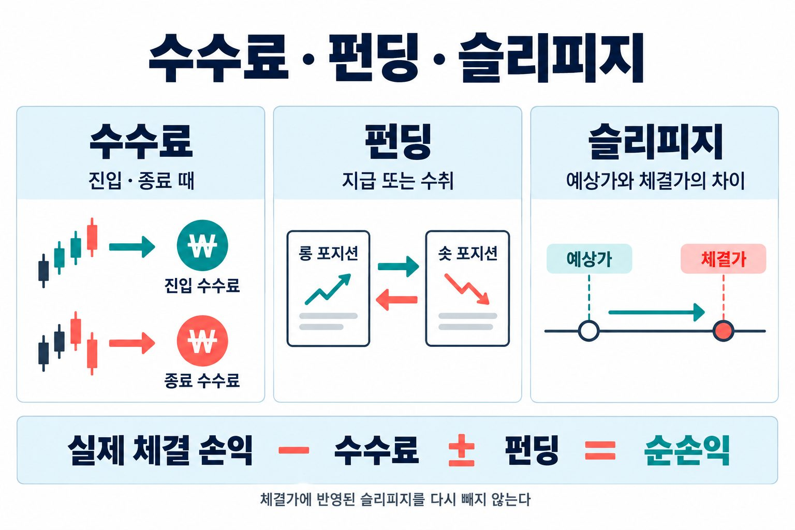
그림 22. 수수료 · 펀딩 · 슬리피지 — 개념도
교차는 같은 계좌의 포지션들이 담보를 함께 씁니다. 한 포지션의 손실이 다른 포지션까지 위험하게 만들 수 있습니다. 격리는 포지션마다 배정한 증거금 안에서 관리하지만, 증거금을 더 넣거나 자동추가가 켜져 있으면 위험 범위가 처음보다 커집니다. ‘격리니까 더는 안 나간다’고 단정하지 않습니다.
현물과 선물을 다른 계좌에 나눠 들어도, 같은 코인을 같은 방향으로 들고 있으면 손실은 겹칩니다. 계좌 개수가 아니라 전체 노출을 합쳐서 봅니다.
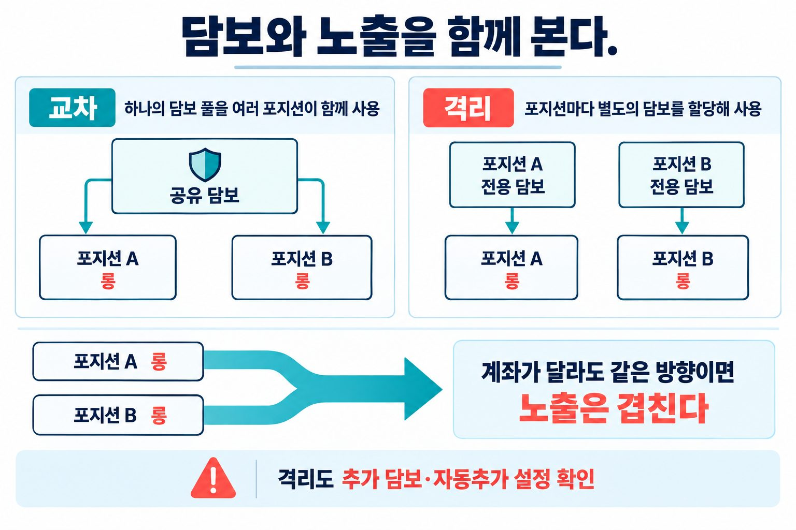
그림 23. 담보와 노출을 함께 본다 — 개념도
스탑 주문은 정해 둔 가격(트리거)에 닿으면 주문을 내는 기능입니다. 트리거 가격과 실제 체결가는 다를 수 있습니다. 그래도 더 큰 구멍은 기능이 아니라 사람입니다. 손실이 나기 시작한 뒤 손절 기준을 계속 옮기면, 처음 정한 손실 예산은 의미가 없어집니다. 종료 계획은 진입 전에 적습니다.
그날의 로그 — 2026년 2월, 브레이크 없는 숏
비트코인이 29% 빠진 걸 보고 나서야 숏을 눌렀다. 5배, 격리. 익절가는
정성껏 걸었는데 손절가 칸은 비어 있었다. 가속 페달만 달고 브레이크는
‘나중에 달지 뭐’ 하고 출발한 셈이다. 가격은 내 계획을 읽어주지 않고
반등했고, 결국 손으로 손절했다.
몰랐던 것: 29% 빠진 뒤에 타는 숏은 추세가 아니라
추격이다. 익절만 걸린 주문은 반쪽짜리 계획이다.
복기에서 정리한 규칙: 모든 선물 주문에는 손절이 먼저
들어간다. 손절 칸이 비어 있으면 주문 버튼을 누르지 않는다.
그날의 로그 — 2026년 3월, 11배 롱을 이틀 반 들고 버틴
날
4시간봉 스윙이라며 11배 격리 롱을 잡았다. 미리 정해 둔 점검에서
‘기다려’라는 판정이 나왔는데 나는 이미 들어가 있었고, 손절 숫자는
머릿속에만 있었다. 머릿속 숫자는 가격이 다가오면 슬그머니 아래로 이사를
간다. 이틀 반을 버티다 증거금 기준 −20.7%로 닫았다.
몰랐던 것: 틀린 진입보다 무서운 건 틀린 뒤에도 계속
들고 가는 보유다. ‘이번만’은 시장이 제일 좋아하는 먹잇감이다.
복기에서 정리한 규칙: 손절 숫자와 ‘이 생각이 틀렸다’는
문장 한 줄이 없으면 주문하지 않는다. 손실 직후에는 4시간봉 하나가 닫힐
때까지 쉰다. 스윙은 5배 이하만 본다.
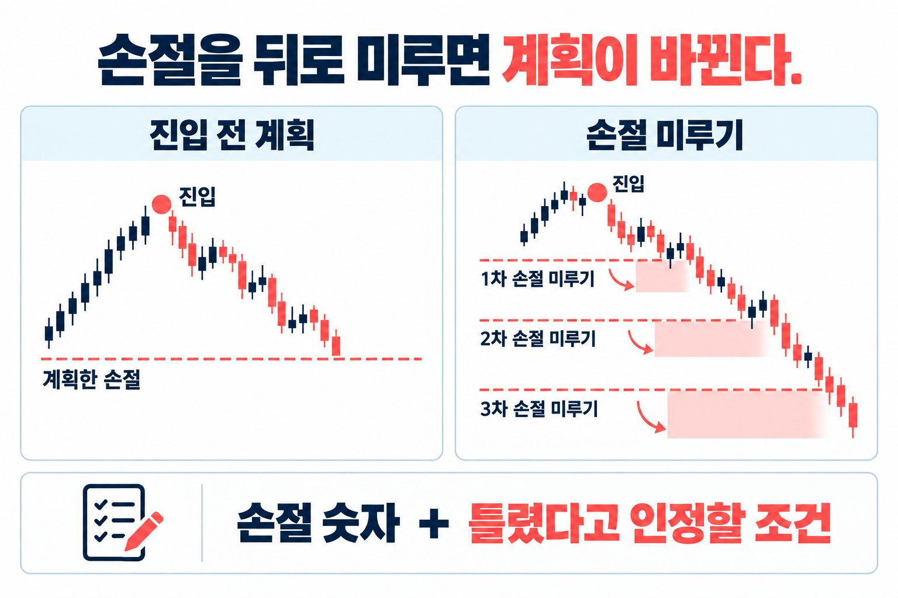
그림 24. 손절을 뒤로 미루면 계획이 바뀐다 — 개념도
나눠 샀다고 위험이 줄지는 않습니다. 내려올 때마다 계획 없이 추가하면 전체 수량이 커지고, 손절에 닿았을 때의 손실도 커집니다. 예를 들어 손절가를 48,500으로 정하고 50,000과 49,500에서 0.002 BTC씩 샀다면, 손절 시 손실은 3 + 2 = 5 USDT입니다. 추가 진입 전에는 평균단가가 아니라 이미 체결된 수량과 살아 있는 주문을 합쳐 손실을 다시 계산합니다. 평균단가가 내려가는 건 기분이고, 수량이 늘어나는 건 현실입니다.
번 돈을 전부 재투자해도 같은 일이 생깁니다. 다음 거래의 손실 금액이 몰래 커집니다. 재투자와 출금의 비율은 거래 전에 정해 둡니다.
5장, 이것만은
① 손절은 내 계획, 청산은 거래소의 강제 종료. 청산가를 손절가로 쓰지
않는다.
② 수수료와 펀딩은 명목금액에 붙는다. 손실 예산에서 먼저 빼고 수량을
정한다.
③ 교차는 담보를 공유한다. 격리도 증거금을 더 넣으면 위험이 커진다. 같은
방향으로 겹쳐 들면 손실도 겹친다.
④ 손절 칸이 비어 있으면 주문하지 않는다.
⑤ 평균단가가 아니라 전체 수량과 살아 있는 주문으로 손실을 계산한다.
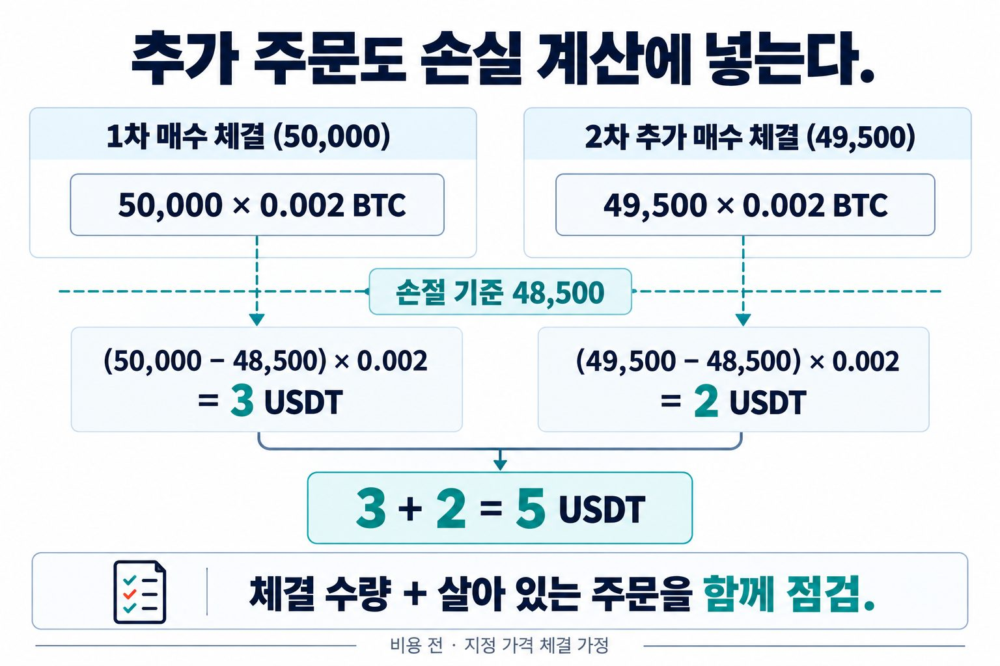
그림 25. 추가 주문도 손실 계산에 넣는다 — 개념도 (가상 예시)
공부해서 지킨 규칙 셋: 손실 예산에서 비용을 먼저 빼고, 한 번 정한 손절은 옮기지 않습니다.
매일 스캘핑을 하던 계좌는 −97%로 닫았습니다. 실력보다 먼저 시간이 모자랐습니다.
차트는 24시간 열려 있지만 저는 그렇지 않습니다. 회의가 있고, 아이를 돌봐야 하고, 잠도 자야 합니다. 이 일정은 매매 뒤에 끼워 넣을 빈칸이 아니라 처음부터 계획에 들어갈 조건입니다.
2장의 0.2%는 과거 패배 거래를 요약한 중앙값이지, 누구에게나 맞는 손절 폭이 아닙니다. 진 판의 절반이 1시간 안에 끝났다는 통계만으로 수동 감시·자동 주문 중 무엇을 썼는지도 알 수 없습니다. 좁은 손절은 작은 가격 변동에도 실행될 수 있습니다. 직장인에게 필요한 질문은 그 수치를 따라 할지가 아니라, 내가 볼 수 있는 시간과 선택한 가격 구간에 맞춰 손실 예산을 설계할 수 있느냐입니다.
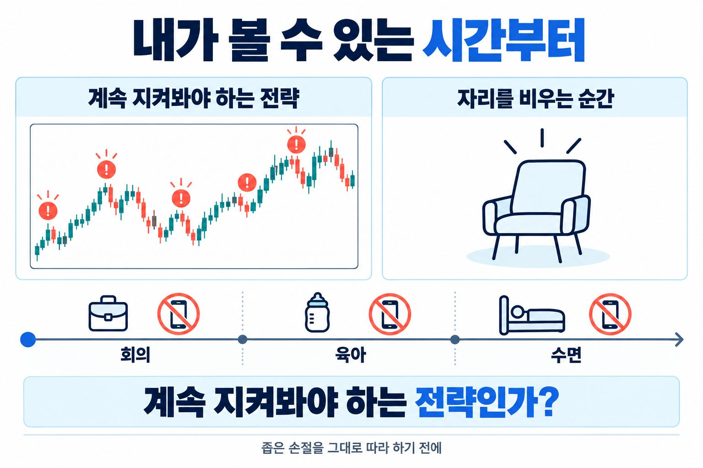
그림 26. 내가 볼 수 있는 시간부터 — 개념도
그래서 직장인은 손절을 넓게 잡고 수량을 줄입니다. 잃는 금액은 같게 설계합니다. 손실 예산은 똑같이 5 USDT입니다.
같은 5 USDT를 잃는 두 가지 방법
화면을 계속 보는 사람: 진입 50,000, 손절 49,900(−0.2%) → 손절 거리 100 →
수량 0.05 BTC
새벽에 계획하는 직장인: 진입 50,000, 손절 48,500(4시간봉 지지 아래) →
손절 거리 1,500 → 수량 약 0.0033 BTC
수량은 약 15분의 1로 줄었지만, 틀렸을 때의 가격 손실은 둘 다 약 5 USDT입니다(비용 제외). 대신 넓은 손절은 정상적인 흔들림을 견딥니다. 직장인에게 작게 지는 법은 손절을 좁히는 것이 아니라 수량을 줄이는 것입니다.
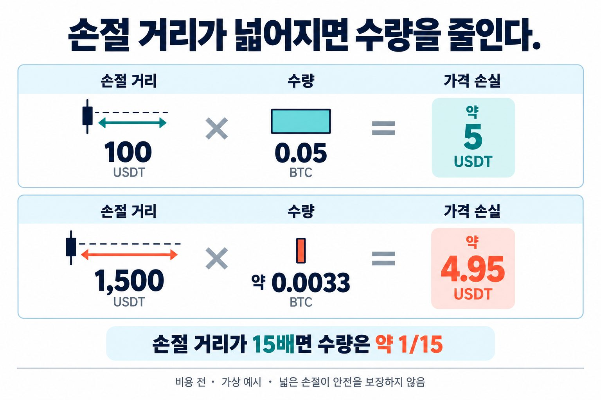
그림 27. 손절 거리가 넓어지면 수량을 줄인다 — 개념도 (가상 예시)
저는 차트 보는 시간을 하루 한 번, 새벽 10분으로 정했습니다. 그 10분 안에 SL과 TP를 정하지 못하면 그날은 들어가지 않습니다. 낮에는 볼 수 없으니, 들어간다면 주문할 때 SL과 TP를 함께 걸어 둡니다. 새벽에 정한 자리를 낮 동안 주문이 대신 지키게 하는 방식입니다. 계속 지켜봐야만 성립하는 전략이라면 처음부터 고르지 않습니다.
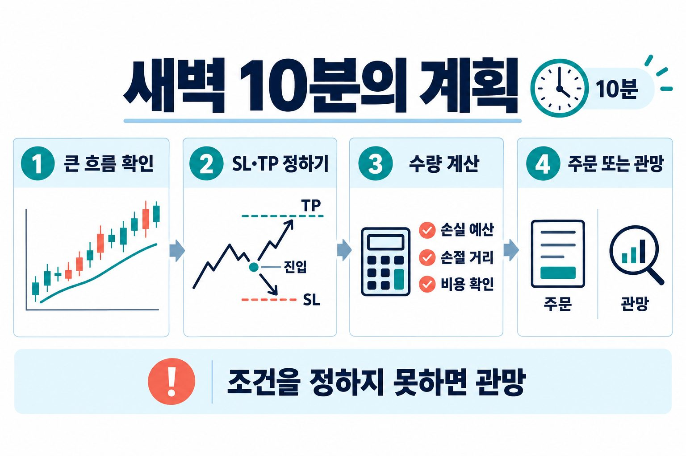
그림 28. 새벽 10분의 계획 — 개념도
‘손절 세 번이면 쉰다’도 횟수만으로는 부족합니다. 그날 잃어도 되는 금액에 먼저 닿았는지, 수량을 늘렸는지, 되찾으려는 마음으로 들어갔는지 함께 봅니다. 다시 시작하기 전에는 남은 주문과 포지션을 확인하고, 손실 원인을 한 줄로 적습니다. 놓친 상승을 따라잡으려고 수량을 늘리거나 돈을 더 넣지 않습니다.
그날의 로그 — 2026년 2월, 단타 계좌를 닫은 날
매일 단타와 스캘핑을 하던 해외 거래소 계좌를 닫았다. 남은 잔고는 처음의
3%, −97%였다. 회사 일을 하면서 매일 스캘핑을 하는 건 야근하면서 부업으로
야근을 하나 더 뛰는 일이었다. 시급으로 따지면 웃음도 안 나오는
부업이다.
몰랐던 것: 직장인에게 매일 단타는 실력보다 시간과
멘탈의 문제다.
복기에서 정리한 규칙: 매일 하는 단타는 하지 않는다.
정해 둔 시각에 볼 수 있는 스윙만 보고, 볼 수 없는 날은 관망을 계획에
넣는다.
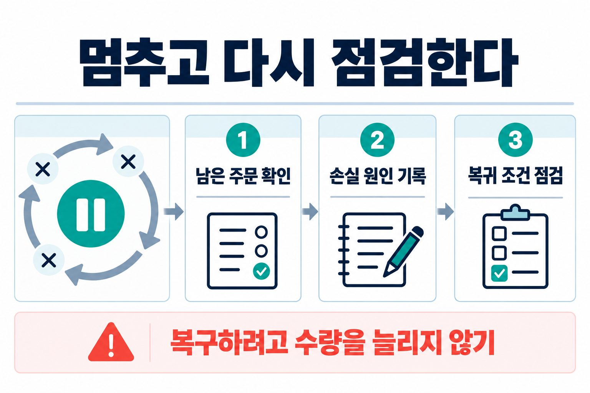
그림 29. 멈추고 다시 점검한다 — 개념도
공부해서 지킨 규칙 넷: 볼 수 있는 시간에만 계획하고, 볼 수 없는 시간은 미리 걸어 둔 주문이 지키게 합니다.
2022년에 이 원고를 처음 쓰면서, 지금은 지운 한 절에 이렇게 적었습니다. 남의 시황을 따라 하며 공부하는 건 좋지만, 그게 끊기면 매매할 원동력도 사라진다. 그러니 자기만의 기준을 세워야 한다.
그때는 방법을 몰랐습니다. 돌아보니 답은 이미 매일 하고 있던 일 안에 있었습니다. 새벽마다 트레이딩뷰에 그린 선과 SL·TP가 제 첫 번째 원장이었습니다. 그 그림들을 다시 넘겨 보며 어떤 선이 맞았고 어떤 SL이 너무 좁았는지 적기 시작하면서, 남의 매매법이 아니라 제 매매법이 보이기 시작했습니다.
손절 숫자와 이 생각이 틀렸다고 판단할 문장 한 줄을 주문 전에 정하자는 것이 이 책의 원칙입니다. 다만 원칙을 적어 두는 일과 실제로 지킨 일, 그리고 손실이 줄어든 결과는 서로 다릅니다.
이 원고에서는 같은 기간·같은 측정 기준으로 원칙 적용 전후의 성과를 검증하지 못했습니다. 그래서 큰 손실이 사라졌다거나 특정 비율의 손실을 더는 보지 않는다고 말하지 않겠습니다. 현재의 습관과 준수 여부도 기록으로 확인할 몫입니다.
남길 것은 성공담보다 확인할 수 있는 기록입니다. 한 판씩 계획과 실제 행동을 적립하고, 그 기록에서 무엇을 읽을지 정하는 방법을 아래에 정리했습니다. 빈 활동지를 채웠다는 이유만으로 효과가 검증되는 것은 아닙니다.
1단계, 기록합니다. 주문 전에 진입 이유, 손절 숫자, 무효화 문장, 볼 수 없는 시간을 적습니다. 끝나면 실제 진입·종료, 비용, 순손익을 붙입니다.
2단계, 원인을 분류합니다. 끝난 판마다 TP로 끝났는지 SL로 끝났는지, 왜 그랬는지를 하나 고릅니다.
TP·SL 원인 분류표
SL로 끝난 판: ① 근거가 틀렸다 ② 타이밍이 일렀다 ③ 손절이 너무 좁았다 ④
뉴스·이벤트로 차트가 무너졌다 ⑤ 규칙을 어겼다
TP로 끝난 판: ① 계획대로 ② 너무 일찍 팔았다 ③ 운이 좋았다
SL ⑤와 TP ③은 수익이 났더라도 다음에 반복할 행동으로 칭찬하지
않는다.
3단계, 패턴을 봅니다. 20~30판이 쌓이면 원인별로 세어 봅니다. 돈은 어떤 진입에서 벌었고, 크게 진 판은 어떤 원인에 몰려 있는지 봅니다. 그게 당신의 스타일입니다. 제 경우 크게 진 판은 대부분 ‘규칙을 어겼다’ 칸에 있었습니다. 손절을 안 걸었거나, 미뤘습니다.
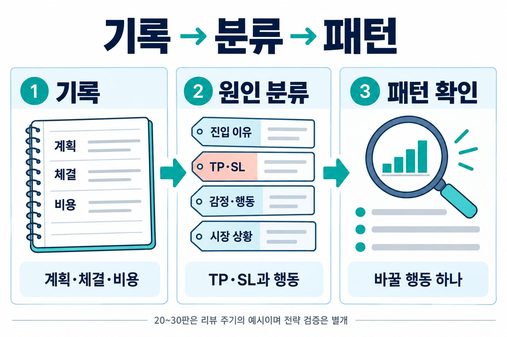
그림 30. 기록 → 분류 → 패턴 — 개념도
열 번 중 여섯 번 이겨도 잔액은 줄 수 있습니다. 여섯 번 1씩 벌고 네 번 2씩 잃으면 비용 전에도 −2입니다. 반대로 승률 40%라도 평균 이익이 손실의 두 배면 거래당 +0.2R(R은 처음 정한 손실 예산)입니다. 2장의 원장도 같은 이야기였습니다. 승률 75%만 보는 대신 상위 26판의 수익 집중과 나머지 거래의 합산 손익, 패배 거래의 손실 분포를 나눠 봐야 했습니다.
원장을 나눠 보면 스타일도 보입니다. 같은 원장을 진입 직전 4시간의 가격 방향으로 나눠 보니, 그는 흐름과 반대로 들어가는 역추세 진입을 더 자주 했습니다(1,619판). 그런데 순이익은 흐름과 같은 방향의 추세 진입(970판)이 +1,586.2 BTC로 역추세(+399.4 BTC)의 약 4배였습니다. 자주 한 매매와 돈을 번 매매가 달랐던 겁니다. 이건 그의 원장이 말해 준 그의 스타일입니다. 당신의 원장은 다른 이야기를 할 수 있습니다.
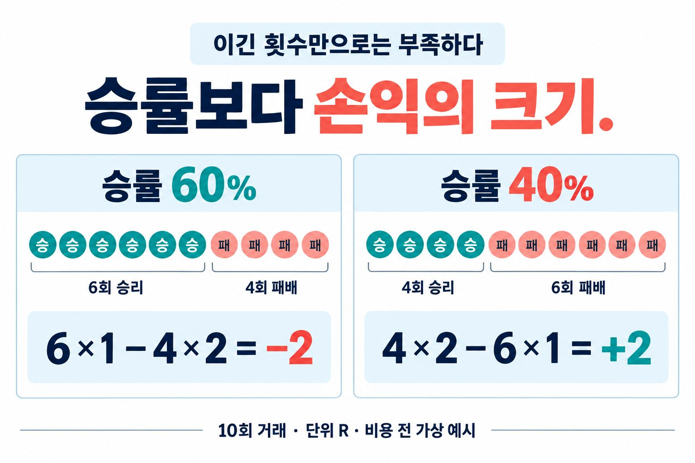
그림 31. 승률보다 손익의 크기 — 개념도 (가상 예시)
원칙은 확인할 수 있는 문장으로 씁니다. ‘침착하게 매매한다’보다 ‘손실 예산을 계산하지 못하면 진입하지 않는다’가 지키기 쉽습니다. 그리고 그 문장은 남의 책이 아니라 내 기록에서 나옵니다.
워뇨띠의 스타일은 그의 원장에 있었고, 제 버릇은 제 원장에
있었습니다.
당신의 스타일도 당신의 원장에 있습니다. 남의 매매법이 아니라.
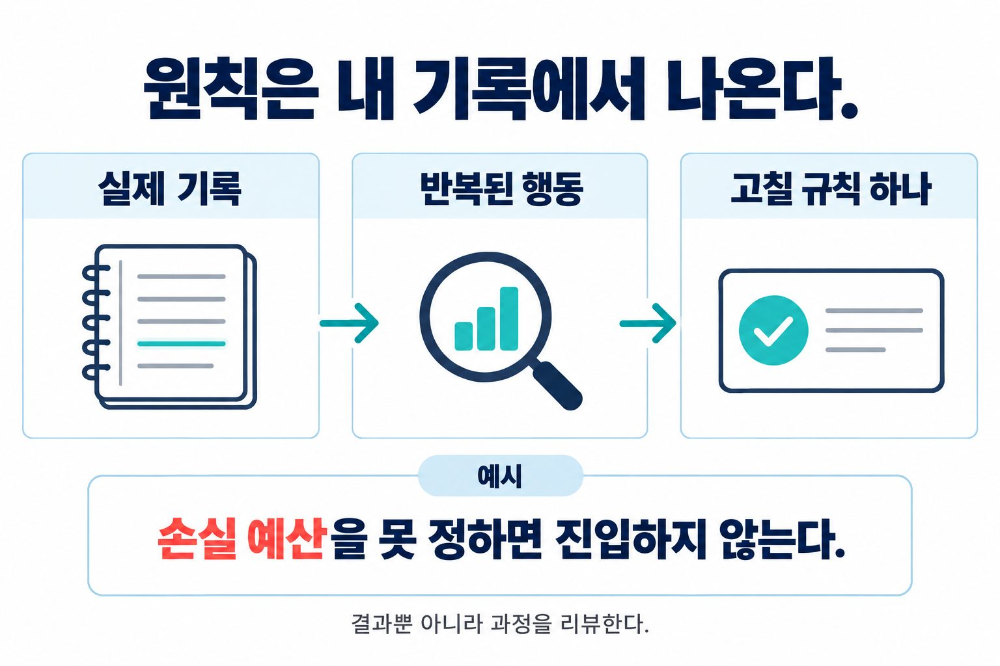
그림 32. 원칙은 내 기록에서 나온다 — 개념도
여기까지 읽었다면 차트를 더 많이 보기보다, 다음 계획 하나를 더 분명하게 적어 보세요. 무엇을 거래하는지, 틀리면 얼마를 잃는지, 일과 육아 때문에 볼 수 없을 때 어떻게 할지를 설명할 수 있어야 합니다.
첫 연습은 모의 기록이어도 충분합니다. 이 책을 읽고 거래하지 않기로 했다면, 그것도 작게 지는 법의 하나입니다.
이 책은 거래 구조와 위험을 이해하기 위한 학습 자료이며 투자 권유나 수익 보장이 아닙니다.
안키 드림
여기 실은 화면은 Binance·Bybit·Bitget의 과거 화면입니다. 메뉴 이름은 달라도 확인할 항목은 같습니다. 기능 위치를 보여주는 예시일 뿐 특정 거래소 가입을 권하지 않습니다. 해외 거래소의 국내 이용 가능 여부와 세금은 읽는 시점의 금융정보분석원·국세청 안내로 확인하세요.
① 신규 진입(Open)인지 확인 ② 지정가(Limit)·시장가(Market) 선택 ③ 가격 입력 ④ 수량 단위가 코인인지 계약인지 금액인지 확인 ⑤ 방향·수량·손절 계획을 다시 보고 주문합니다.
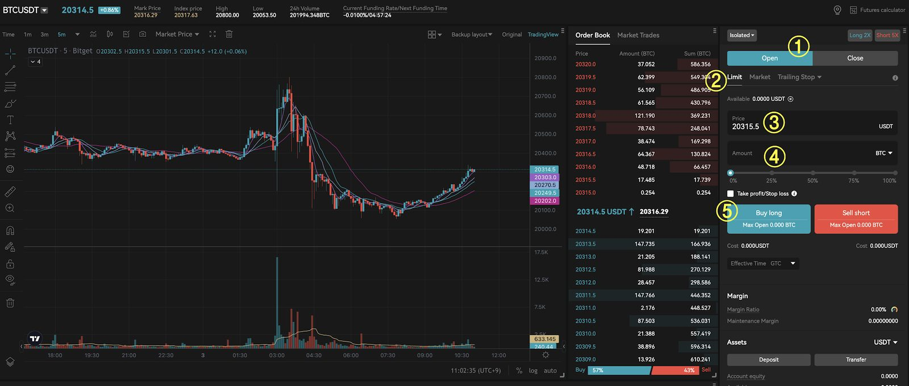
그림 33. 포지션 진입 — Bitget 과거 화면
① 종료(Close) 탭 ② 지정가·시장가 ③ 가격 ④ 전체인지 일부인지 수량 확인 ⑤ 종료 뒤 남은 포지션과 살아 있는 주문을 확인합니다.
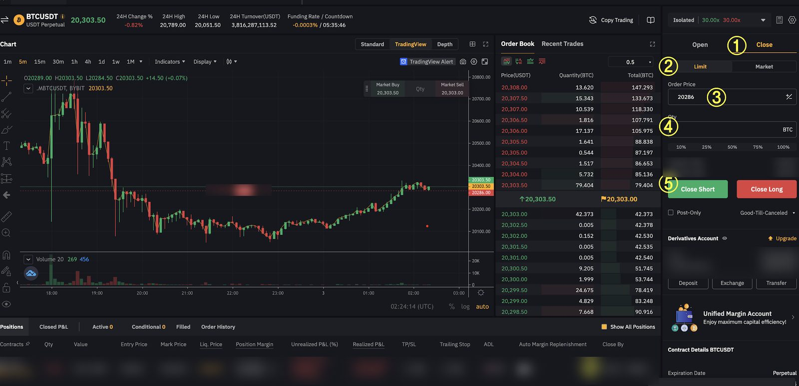
그림 34. 포지션 종료 — Bybit 과거 화면(계좌 정보는 가림)
진입하면서 TP(익절)와 SL(손절)을 같이 거는 화면입니다. 트리거 기준(최종 체결가·마크가격 등)과 실제 주문 방식을 확인하고, 보유 중에 조건을 바꿨다면 수량과 가격이 의도대로 남았는지 확인합니다.
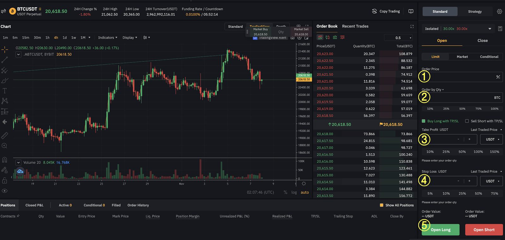
그림 35. 손절·익절 설정 — Bybit 과거 화면
배수 표시를 눌러 레버리지를 바꾸고, 증거금 모드에서 교차·격리를 고릅니다. 배수와 모드를 바꿔도 손실 예산과 수량 계산이 먼저입니다. 화면의 125배는 사용을 권하는 값이 아닙니다.
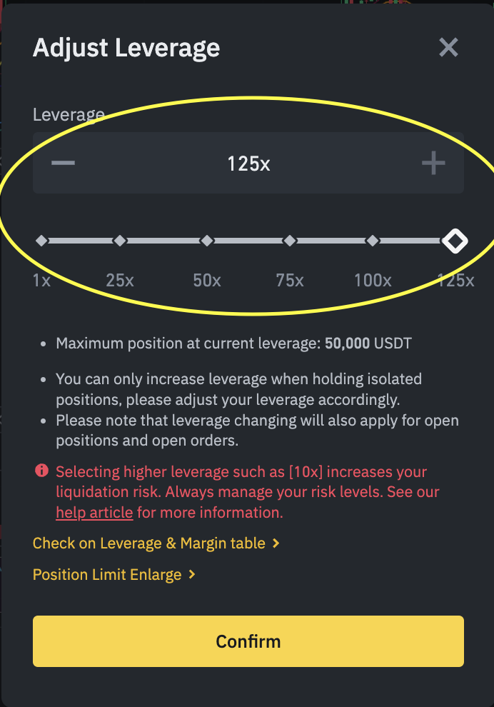
그림 36. 레버리지 조정 — Binance 과거 화면
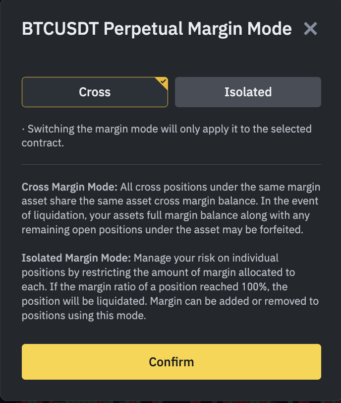
그림 37. 교차·격리 증거금 모드 — Binance 과거 화면
처음에는 시간봉, 기본 캔들, 이동평균선, 거래량, 추세선 도구만 있으면 충분합니다. 화면은 트레이딩뷰의 과거 화면이며, 메뉴는 바뀔 수 있습니다.
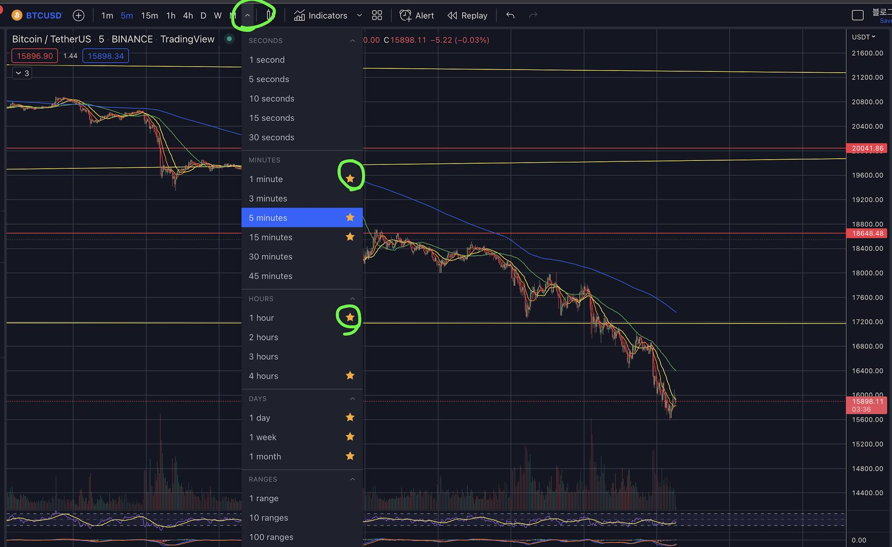
그림 38. 시간봉 설정
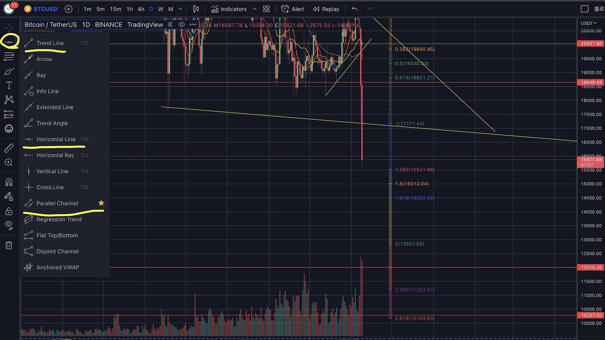
그림 39. 추세선(Trend Line)·수평선(Horizontal Line)·평행 채널
이동평균선은 현재 시간봉 기준입니다. 4시간봉에서 20이면 20개의 4시간봉 평균입니다. 거래량은 코인 수량인지 금액인지 단위를 확인합니다.
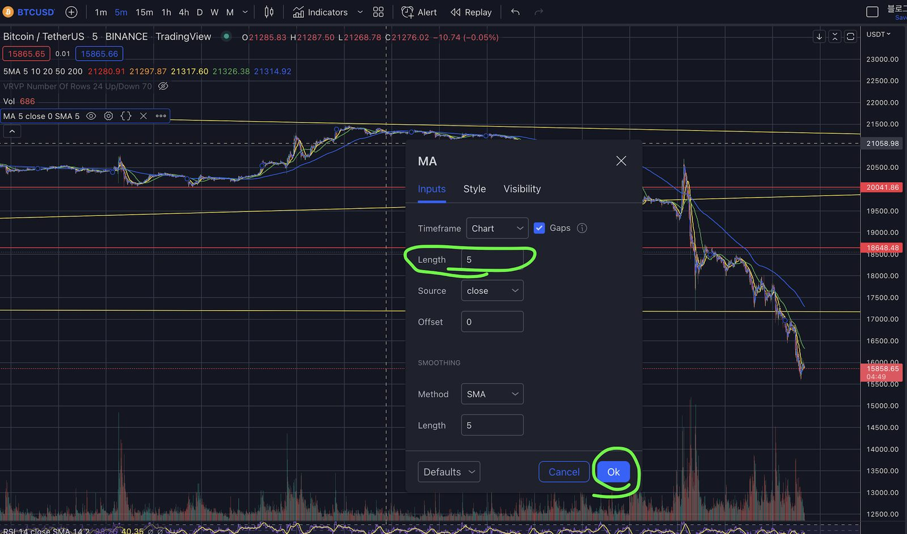
그림 40. 이동평균선 기간 설정
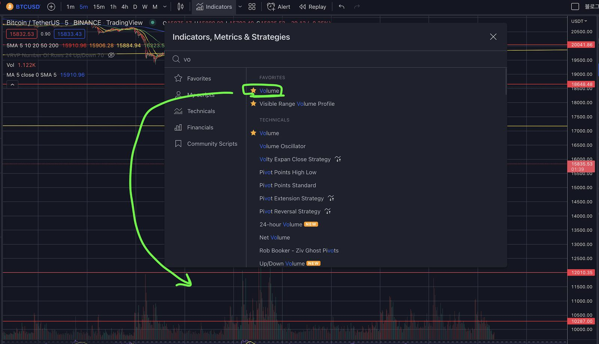
그림 41. 거래량 설정
한 장 카드
① 이번 거래가 틀리면 잃을 금액(손실 예산)
② 진입가와 손절가의 거리
③ 비용 전 수량(BTC) = ①(USDT) ÷ ②(USDT/BTC) = ___
새벽 10분 차트 노트
날짜 ___ / 주봉 흐름 ___ / 일봉·4시간 핵심 구간 ___ / 1시간 확인
들어간다면 SL TP ___ / 들어가지 않는다면 그 이유 ___ /
다음 날 결과 ___
매매일지(리뷰용)
계획 ___ / 실제 체결 ___ / 수수료 ___ / 펀딩 ___ / 순손익
TP·SL 중 무엇으로 끝났나 / 원인(분류표 번호) ___ / 지킨
규칙 ___ / 바꿀 행동 하나 ___
포지션 리뷰 시트(20~30판마다)
기간 ___ / 판 수 ___ / TP로 끝난 판 ___ (계획대로 ___ 일찍 ___ 운
)
SL로 끝난 판 (근거 ___ 타이밍 ___ 좁은 손절 ___ 이벤트
___ 규칙 위반 )
순손익이 가장 좋았던 진입 방식 / 크게 진 판이 몰린 원인
___ / 다음 30판에서 바꿀 행동 하나 ___
아래 숫자는 실제 거래나 저자의 성과가 아닙니다. 선형 USDT 계약의 롱을 가정하고, 손절가와 같은 가격에 체결되며 펀딩과 슬리피지는 0이라고 둔 계산 연습입니다. 실제 주문에서는 이 가정이 깨질 수 있습니다.
가상 리뷰 기록: 계획은 지지 구간 반등, 무효화 조건은 미리 정한 구간 이탈이라고 적습니다. 연습용 결과를 ‘손절가와 같은 가격으로 종료’라고 가정하면, 비용 포함 손익은 −4.94775 USDT입니다. 이 숫자는 시장에서 관측한 결과가 아닙니다. ‘손절 실행’만으로 진입 근거가 틀렸는지, 손절이 좁았는지는 알 수 없으므로 원인 분류는 ‘판단 보류, 차트·계획 대조 필요’로 남깁니다.
비용은 돈(USDT)이고 수량은 BTC입니다. 수수료 금액을 BTC 수량에서 그대로 빼지 않습니다. 펀딩을 받는 경우와 내는 경우를 구분하고, 실제 체결 가격으로 손익을 셌다면 그 안의 슬리피지를 다시 비용으로 빼지 않습니다.